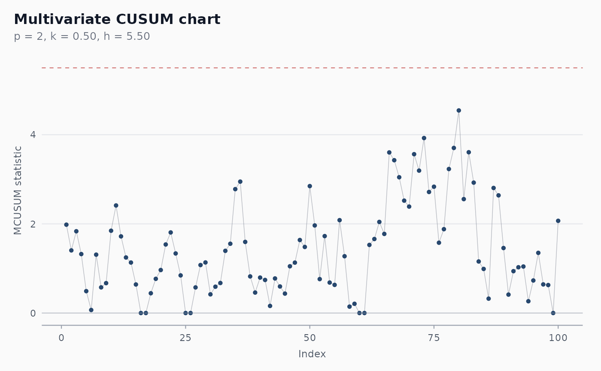

Constructs a multivariate CUSUM chart for jointly monitoring p
correlated variables. Like the univariate CUSUM it accumulates
deviations from a target with a reference value k that decides
when the accumulator resets; unlike a Hotelling T^2 chart it
carries memory across observations and so detects small persistent
shifts faster.
Usage
shewhart_mcusum(
data,
vars,
index = NULL,
target = NULL,
cov = NULL,
k = 0.5,
h = NULL,
locale = getOption("shewhart.locale", "en"),
verbose = NULL
)Arguments
- data
A data frame.
- vars
Tidy-select expression for the columns to monitor jointly. At least 2 columns.
- index
Optional tidy-eval column for the x-axis.
- target
Optional length-
pnumeric vector. The in-control mean. Defaults tocolMeans(data[, vars]).- cov
Optional
p x pcovariance matrix. Defaults tocov(data[, vars]).- k
Reference value, in sigma units. Default
0.5, tuned for shifts of1 sigma. Lowerkmakes the chart sensitive to smaller shifts but increases false alarms.- h
Decision interval. If
NULL, looked up in the Crosier (1988) Table 1 fork = 0.5,ARL_0 ~ 200,p = 2..10.- locale
One of
"en","pt","es","fr".- verbose
Logical. Print progress messages?
Value
A shewhart_chart object of subclass shewhart_mcusum.
The augmented tibble has columns .y (the chart statistic),
.upper (the decision interval h), and .flag_signal.
References
Crosier, R. B. (1988). Multivariate Generalizations of Cumulative Sum Quality-Control Schemes. Technometrics, 30(3), 291-303. doi:10.1080/00401706.1988.10488402
Pignatiello, J. J., & Runger, G. C. (1990). Comparisons of Multivariate CUSUM Charts. Journal of Quality Technology, 22(3), 173-186. doi:10.1080/00224065.1990.11979237
Examples
set.seed(1)
Sigma <- matrix(c(1, 0.6, 0.6, 1), 2, 2)
base <- MASS::mvrnorm(60, c(0, 0), Sigma)
shift <- MASS::mvrnorm(40, c(0.6, 0.6), Sigma)
df <- data.frame(t = 1:100,
x1 = c(base[, 1], shift[, 1]),
x2 = c(base[, 2], shift[, 2]))
fit <- shewhart_mcusum(df, vars = c(x1, x2), index = t,
target = c(0, 0), cov = Sigma)
print(fit)
#>
#> ── Shewhart chart mcusum ───────────────────────────────────────────────────────
#> • Observations / subgroups: 100
#> • Phase: "phase_1"
#> • Sigma estimate ("mcusum"): NA
#>
#> ── Control limits ──
#>
#> # A tibble: 1 × 3
#> chart line value
#> <chr> <chr> <dbl>
#> 1 MCUSUM UCL 5.5
#> ── Rule violations ──
#>
#> ✔ No violations across 1 rule: "mcusum_h".
# \donttest{
ggplot2::autoplot(fit)

# }